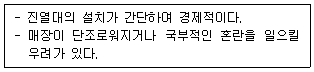
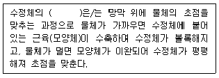
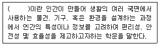
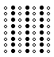
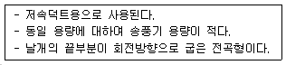

실내건축기사(구) (2020-06-06 기출문제)
1과목: 실내디자인론
1. 다음 중 VMD(visual merchandising)의 구성 요소와 가장 거리가 먼 것은?
- IP(item presentation)
- VP(visual presentation)
- PP(point of sale presentation)
- POP(point of purchase advertising)
(정답률: 77%)

2. 백화점의 에스컬레이터 배치 유형 중 교차식 배치에 관한 설명으로 옳은 것은?
- 연속적으로 승강할 수 없다.
- 점유면적이 다른 유형에 비해 작다.
- 고객의 시야가 다른 유형에 비해 넓다.
- 고객의 시선이 1방향으로만 한정된다는 단점이 있다.
(정답률: 58%)
3. 다음 주택 부엌가구 배치유형 중 벽면을 이용하여 작업대를 배치한 형식으로 작업 면이 넓어 작업 효율이 가장 좋은 것은?
- 일자형
- L자형
- ㄷ자형
- 병렬형
(정답률: 72%)
4. 실내공간을 구성하는 기본 요소에 관한 설명으로 옳지 않은 것은?
- 벽은 다른 요소들에 비해 조형적으로 가장 자유롭다.
- 바닥은 고저차를 통해 공간의 영역을 조정할 수 있다.
- 다른 요소들이 시대와 양식에 의한 변화가 현전한데 비해 바닥은 매우 고정적이다.
- 천장은 시각적 흐름이 최종적으로 멈추는 곳이기에 지각의 느낌에 영향을 미친다.
(정답률: 45%)
5. 한국의 전통가구 중 반닫이에 관한 설명으로 옳지 않은 것은?
- 반닫이는 우리나라 전역에 걸쳐서 사용되었다.
- 전면 상반부를 문짝으로 만들어 상하로 여는 가구이다.
- 반닫이는 주로 양반층에서 장이나 농 대신에 사용하던 가구이다.
- 반닫이 안에는 의복, 책, 제기 등을 보관하였고, 위에는 이불을 얹거나 항아리, 소품 등을 얹어 두었다.
(정답률: 70%)
6. 디자인 원리 중 균형에 관한 설명으로 옳지 않은 것은?
- 비대칭적 균형은 대칭적 균형보다 질서가 있고 안정된 느낌을 준다.
- 인간의 주의력에 의해 감지되는 시각적 무게의 평형상태를 의미한다.
- 대칭적 균형은 형, 형태의 크기, 위치, 형식, 집합의 정렬 등이 축을 중심으로 서로 대칭적인 관계로 구성되어 있는 경우를 말한다.
- 디자인 요소들의 상호작용이 하나의 지점에서 역학적으로 평형을 갖거나 전체의 그룹 안에서 서로 균등함을 이루고 있는 상태를 말한다.
(정답률: 81%)
7. 그리드 플래닝(grid planning)에 관한 설명으로 옳지 않은 것은?
- 그리드 플래닝은 논리적이고 합리적인 디자인 전개를 가능하게 한다.
- 그리드가 단순화되고 보편적인 법칙에 종속되면 틀에 박힌 계획이 되기 쉽다.
- 직사각형 그리드는 가장 기본적인 형태의 그리드로 좌우 대칭이기에 중립적이며 방향성도 없다.
- 정사각형 그리드는 일반적으로 황금비율에 의한 그리드이거나 경제적 스팬에 준한 그리드를 사용한다.
(정답률: 45%)
8. 형태에 관한 설명으로 옳지 않은 것은?
- 인위적 형태들은 휴먼스케일과 일정한 관계를 지닌다.
- 기하학적인 형태는 불규칙한 형태보다 가볍게 느껴진다.
- 인위적 형태는 개념적으로만 제시될수 있는 형태로서 상징적 형태라고도 한다.
- 자연형태는 단순한 부정형의 형태를 취하기도 하지만 경우에 따라서는 체계적인 기하학적인 특징을 갖는다.
(정답률: 55%)
9. 아파트의 평면형식 중 중복도형에 관한 설명으로 옳지 않은 것은?
- 부지의 이용률이 높다.
- 프라이버시가 좋지 않다.
- 각 주호의 일조조건이 동일하다.
- 도심지 내의 독신자용 아파트에 적용된다.
(정답률: 60%)
10. 동선의 3요소에 속하지 않는 것은?
- 시간
- 하중
- 속도
- 빈도
(정답률: 49%)
11. 19세기말부터 20세기초에 걸쳐 벨기에와 프랑스를 중심으로 모리스와 미술·공예운동의 영향을 받아서 과거의 양식과 결별하고 식물이 갖는 단순한 곡선형태를 인테리어 가구 구성에 이용한 예술운동은?
- 아르데코
- 아르누보
- 아방가르드
- 컨템포러리
(정답률: 68%)
12. 다음과 같은 특징을 갖는 상점 진열대의 배치 형식은?

- 복합형
- 직렬배치형
- 환상배열형
- 굴절배치형
(정답률: 83%)
13. 질감(texture)에 관한 설명으로 옳은 것은?
- 질감의 형성은 인공적으로만 이루어진다.
- 촉각에 의한 질감과 시각에 의한 질감으로 구분된다.
- 유리,거울 같은 재료는 낮은 반사율을 나타내며 차갑게 느껴진다.
- 좁은 실내 공간을 넓게 느껴지도록 하기 위해서는 어둡고 거친 질감의 재료를 사용한다.
(정답률: 76%)
14. 연면적 200m2를 초과하는 판매시설에 설치하는 계단의 유효너비는 최소 얼마 이상으로 하여야 하는가?
- 90cm
- 120cm
- 150cm
- 180cm
(정답률: 62%)
15. 다음 중 일광조절장치에 속하지 않는 것은?
- 커튼
- 루버
- 코니스
- 블라인드
(정답률: 72%)
16. ‘루빈의 항아리’와 관련된 형태의 지각 심리는?
- 유사성
- 그룹핑 법칙
- 형과 배경의 법칙
- 프래그낸즈의 법칙
(정답률: 79%)
17. 다음 중 단독주택의 현관 위치결정에 가장 주된 영향을 끼치는 것은?
- 용적률
- 건폐율
- 도로의 위치
- 주택의 규모
(정답률: 80%)
18. 장식품(accessory)에 관한 설명으로 옳지 않은 것은?
- 실내디자인을 완성하게 하는 보조적인 역할을 한다.
- 실내 공간의 성격, 크기, 마감재료, 색채 등을 고려하여 그 종류를 선정한다.
- 디자인의 의도에 따라 실의 분위기나 시각적 효과를 좌우하는 요소가 될 수 있다.
- 디자인의 완성도를 높이기 위하여 도입하는 것으로서 심미적 감상 목적의 물품만을 말한다.
(정답률: 81%)
19. 조명의 연출기법 중 수직벽면을 빛으로 쓸어내리는 듯한 효과를 주기 위해 비대칭 배광 방식의 조명기구를 사용하여 수직벽면에 균일한 조도의 빛을 비추는 기법은?
- 스파클 기법
- 월워싱 기법
- 실루엣 기법
- 빔플레이 기법
(정답률: 79%)
20. 전시공간의 순회 유형 중 연속순회형식에 관한 설명으로 옳지 않은 것은?
- 각 실을 필요에 따라 독립적으로 폐쇄할 수 있다.
- 전시 벽면이 최대화되고 공간 절약 효과가 있다.
- 관람객은 연속적으로 이어진 동선을 따라 관람하게 된다.
- 비교적 동선이 단순하며 다소 지루하고 피곤한 느낌을 줄 수 있다.
(정답률: 72%)
2과목: 색채학
21. 빨강(Red)과 초록(Green)을 가산혼합하면 무슨 색이 되는가?
- 검정
- 파랑
- 노랑
- 흰색
(정답률: 66%)
22. 문·스펜서 조화론의 단점으로 옳은 것은?
- 무채색과의 관계를 생략하고 있다.
- 전통적 조화론을 무시하고 있다.
- 명도, 채도를 고려하지 않았다.
- 색의 연상, 기호, 상징성은 고려하지 않았다.
(정답률: 55%)
23. 망막의 중심와에 약 650만 개가 모여 있는 원뿔 형태의 세포로, 색을 판단하는 색채 시각과 관련이 있는 것은?
- 추상체
- 간상체
- 수평세포
- 양극세포
(정답률: 65%)
24. 공장 안에서 통행에 충돌 위험이 있는 기둥은 무슨 색으로 처리하는 것이 안전색체에 적절한가?
- 빨강
- 노랑
- 파랑
- 초록
(정답률: 70%)
25. 채도에 대한 설명으로 옳은 것은?
- 순색으로 반사율이 높은 색이 채도가 높다.
- 반사량이 적은 색이 채도가 높다.
- 채도에서는 포화도가 존재하지 않는다.
- 무채색도 채도 값이 있다.
(정답률: 66%)
26. 색채조화의 공통되는 원리가 아닌 것은?
- 질서의 원리
- 유사의 원리
- 대비의 원리
- 모호성의 원리
(정답률: 66%)
27. 정상적인 눈을 가진 사람도 미소(微少)한 색을 볼 때 일어나는 색각혼란은?
- 색상이상
- 잔상현상
- 소면적 제 3 색각이상
- 주관색 현상
(정답률: 48%)
28. 흰 종이위에 있는 빨간 사과를 한참 보다가 치워 버렸다. 그 자리에 같은 모양의 어떠한 색이 연상되어 보이는가?
- 청록
- 파랑
- 보라
- 자주
(정답률: 61%)
29. “C+W+B=100"이란 이론을 만들어낸 학자는?
- 먼셀
- 뉴턴
- 오스트발트
- 맥스웰
(정답률: 66%)
30. 색을 띤 그림자라는 의미로 주변색의 보색이 중심에 있는 색에 겹쳐서 보이는 현상은?
- 색음현상
- 메타메리즘
- 애브니효과
- 메카로효과
(정답률: 51%)
31. 심리·물리적인 빛의 혼색실험에 기초하여 색을 표시하는 색체계에 해당하는 것은?
- 혼색계
- 현색계
- 먼셀 색체계
- 물체 색체계
(정답률: 66%)
32. 오스트반트의 색채 조화론에 관한 설명 중 틀린 것은?
- 무채색 단계에서 같은 간격으로 선택한 배색은 조화된다.
- 등색상 3각형의 아래쪽 사변에 평행한 선상의 색들은 조화된다.
- 색입체의 중심축에 대해 수평으로 잘라진 색들은 조화된다.
- 색상 일련번호의 차가 6∼8일 때 반대색 조화가 생긴다.
(정답률: 58%)
33. 모니터 화면의 검은색 조정에 관한 설명으로 옳은 것은?
- 모니터 화면의 가장자리가 마치 검은색 띠를 두른 것처럼 보이는 부분은 전압(voltage)이다.
- 모니터 화면 중에서 영상이나 텍스트를 디스플레이하는 부분은 전류의 전압이 0인 무전압(non (voltage)영역이다.
- 모니터에 부착된 이미지 사이즈 조절버튼으로 전압영역 폭의 넓이를 약 2∼3cm가 되도록 한다.
- RGB 각각에 R=0, G=0, B=0과 같은 수치를 주어 디스플레이 하면 전압영역이 검은색이 된다.
(정답률: 57%)
34. 디바이스 종속 색체계에 대한 설명으로 옳은 것은?
- CIE XYZ 색체계 예시를 들 수 있다.
- 동일한 제조 회사에서 생산하는 모든 컬러 디바이스 모델은 서로 색체계가 같다.
- 디지털 색채를 다루는 전자장비들 간에 호환성이 없다.
- 제조업체가 다른 컬러 디바이스 모델 간에는 색채정보가 같다.
(정답률: 28%)
35. 빛의 파장 단위로 사용되는 mm(nanometer)의 단위를 올바르게 나타낸 것은?
- 1nm = 1/1만 mm
- 1nm = 1/10만 mm
- 1nm = 1/100만 mm
- 1nm = 1/1000만 mm
(정답률: 60%)
36. 색의 3속성 중 명도의 의미는?
- 색의 이름
- 색의 맑고 탁함의 정도
- 색의 밝고 어두움의 정도
- 색의 순도
(정답률: 77%)
37. 스웨덴의 색채 표준으로 채용된 색체계로 헤링의 심리 4원색과 백, 흑 등 6색을 원색으로 하는 색체계는?
- 먼셀 색체계
- 오스트발트 색체계
- NCS 색체계
- PCCS 색체계
(정답률: 58%)
38. 오스트발트의 등색상면에서 밝은에서 어두운 순서대로 나열된 것은?
- pn-ig-ca
- li-ge-ca
- ec-nl-ge
- ca-ec-ig
(정답률: 53%)
39. 오스트발트 색입체를 명도를 축으로 하여 수직으로 절단했을 때의 단면 모양은?
- 삼각형
- 타원형
- 직사각형
- 마름모형
(정답률: 62%)
40. 주황색을 강한 인상으로 보여주려 할 때, 그 전에 어떤 색을 15초간 보여주는 것이 효과적인가?
- 주황색
- 빨강색
- 녹색
- 감청색
(정답률: 58%)
3과목: 인간공학
41. 어떠한 찌그러진 동전이 앞면이 나올 확률은 0.9, 뒷면이 나올 확률은 0.1이면, 이 동전이 주는 정보량은 얼마인가?
- 0.9bits
- 0.15bits
- 0.21bits
- 0.47bits
(정답률: 34%)
42. 다음 ( )안에 들어갈 알맞은 것은?

- 음영(shade)
- 조응(adaptation)
- 조절작용(accommodation)
- 신경 충동(neural impulse)
(정답률: 68%)
43. 인간의 눈의 구조에 관한 설명으로 옳은 것은?
- 망막의 중심부에는 간상체만 있다.
- 간상체는 색을 구별할 수 있게 한다.
- 광 수용기는 간상세포와 추상세포로 나눌 수 있다.
- 수정체는 눈으로 들어오는 빛의 양을 조절한다.
(정답률: 54%)
44. 다음 ( )안에 들어갈 알맞은 용어는?

- 자연공학
- 기계공학
- 인간공학
- 휴먼에러
(정답률: 78%)
45. 시각적 표시장치의 유형 중 원하는 값으로부터의 대략적인 편차나 고도 등과 같이 시간적인 변화 방향을 알아보는데 가장 적합한 형태는?
- 계수형(digital)
- 동목형(moving scale)
- 그림표시형(pictogram)
- 동침형(moving pointer)
(정답률: 54%)
46. 두 소리의 강도(强度)를 음압으로 측정한 결과 뒤의 소리가 처음보다 음압이 100배 증가하였다면 이 때 dB 수준은 얼마인가?
- 10
- 40
- 100
- 200
(정답률: 37%)
47. 그림과 같은 시각요소에 해당되는 게슈탈트(Gestalt)의 법칙에 해당되는 것은?

- 단순성
- 모양성
- 폐쇄성
- 유사성
(정답률: 57%)
48. 인체계측자료의 응용원칙 중에서 인체계측 변수 분포의 1, 5, 10 백분위수 등과 같은 최소 집단치를 적용하여 설계해야 하는 것은?
- 문의 높이
- 선반의 높이
- 그네의 지지중량
- 의자의 너비
(정답률: 62%)
49. 진동이 인간성능에 끼치는 일반적인 영향으로 옳지 않은 것은?
- 진동은 진폭에 비례하여 시력을 손상시킨다.
- 안정되고 정확한 근육 조절을 요하는 작업은 진동에 의해서 저하된다.
- 진동은 진폭에 비례하여 추적 능력을 손상하며 낮은 진동수에서 가장 심하다.
- 반응시간, 형태 식별 등 주로 중앙 신경 처리에 달린 임무는 진동의 영향을 많이 받는다.
(정답률: 45%)
50. 실내 전체를 일률적으로 밝히는 방법으로 광원을 일정한 간격과 높이로 배치하여 눈의 피로가 적고, 비교적 사고나 재해가 적어지는 조명법은?
- 직접조명법
- 간접조명법
- 국소조명법
- 전반조명법
(정답률: 65%)
51. 청각에 관한 설명으로 옳은 것은?
- 1폰(phon)은 40손(sone)에 해당하며, 음폭을 나타내는 단위이다.
- 귀는 해부학적으로 외이, 중이, 내이로 구분되며, 고막은 내이에 속한다.
- 가청범위란 음의 높낮이에 관계없이 일정한 음이 흐르는 것을 말한다.
- “masking"이란 2개 이상의 음이 동시에 존재할 때 음의 한 성분이 다른 성분으로 인해 감소되는 효과를 말한다.
(정답률: 59%)
52. 다음 중 조종장치와 표시장치의 관계를 나타낸 조종-반응비율(C/R비)에 관한 설명으로 옳지 않은 것은?
- 최적의 C/R비는 조종시간과 이동시간을 나타내는 두 곡선의 교차점 부근이 된다.
- C/R비가 크면 감도(sensitivity)가 좋고, C/R비가 작으면 감도가 나쁘다.
- 노브(knob)의 C/R비는 손잡이 1회전시 움직이는 표시장치 이동거리의 역수로 나타낸다.
- C/R비가 작은 경우에는 조종장치를 조금만 움직여도 표시장치의 지침은 많이 이동하게 된다.
(정답률: 54%)
53. 인체의 구조 중에서 운동기관계의 구성을 적합하게 표현한 것은?
- 골격계(skeletal system)+근육계(muscular system)
- 근육계(muscular system)+신경계(nervous system)
- 골격계(skeletal system)+소화기계(digestive system)
- 기초대사(basal metabolism)+신경계(nervous system)
(정답률: 71%)
54. 다음 짐을 나르는 경우 중 산소 소비량이 가장 크게 소요되는 것은?
- 머리에 이고 옮기는 경우
- 양 손으로 들고 옮기는 경우
- 목도를 이용하여 어깨로 옮기는 경우
- 배낭을 이용하여 어깨로 옮기는 경우
(정답률: 76%)
55. 단위 입체각(solid angle)당 광원에서 방출되는 빛의 양을 나타내는 단위로 옳은 것은?
- 와트(W)
- 럭스(lux)
- 푸트 캔들(fc)
- 칸델라(cd)
(정답률: 39%)
56. 인간공학적 의자 디자인 시 고려해야 할 사항과 가장 거리가 먼 것은?
- 사람의 앉은키
- 좌판(坐板)의 높이와 폭, 깊이
- 좌판(坐板)에서의 무게, 부하 분포
- 동작의 안정성과 위치변동의 편리성
(정답률: 49%)
57. 사람이 근육을 사용하여 특정한 힘을 유지할 수 있는 시간(능력)을 무엇이라 하는가?
- 염력
- 완력
- 지구력
- 전단응력
(정답률: 71%)
58. 일반적인 VDT(visual Display Terminal) 사용시 주변의 조도(lux)로 가장 적합한 것은?
- 50∼150
- 300∼500
- 750∼1000
- 2000∼3000
(정답률: 58%)
59. 계기판(計器板)의 눈금 숫자를 표시하는 방법으로 가장 적절하지 않은 것은?
- 0-1-2-3-4-5
- 0-3-6-9-12-15
- 0-5-10-15-20-25
- 0-100-200-300-400-500
(정답률: 66%)
60. 다음 중 열전도율이 가장 낮은 것은?
- 공기
- 체지방
- 콘크리트
- 단열재
(정답률: 47%)
4과목: 건축재료
61. 목재의 절대건조비중이 0.3일 때 이 목재의 공극률은?
- 약 80.5%
- 약 78.7%
- 약 58.3%
- 약 52.6%
(정답률: 34%)
62. 스팬드럴 유리에 관한 설명으로 옳지 않은 것은?
- 건축물의 외벽 층간이나 내·외부 장식용 유리로 사용한다.
- 판유리 한쪽면에 세라믹질의 도료를 도장한 후 고온에서 융착, 반강화한 것으로 내구성이 뛰어난다.
- 색상이 다양하고 중후한 질감을 갖고 있으며 건축물의 모양에 따라 선택의 폭이 넓다.
- 열깨짐의 위험이 있으므로 유리표면에 페인트도장을 하거나, 종이 테이프 등을 부착하지 않는다.
(정답률: 66%)
63. 포졸란을 사용한 콘크리트의 특징이 아닌 것은?
- 수밀성이 크다.
- 해수 등에 대한 화학 저항성이 크다.
- 발열량이 크다.
- 강도의 증진이 느리나 장기강도는 크다.
(정답률: 54%)
64. 실리콘(Silicon)수지에 관한 설명으로 옳지 않은 것은?
- 탄력성, 내수성 등이 아주 우수하기 때문에 접착제, 도료로서 주로 사용된다.
- 70∼80℃의 고온에서는 연화되는 단점이 있다.
- 가소물이나 금속을 성형할 때 이형제로 쓸수 있을 정도로 피복력이 있다.
- 발수성이 있기 때문에 건축물, 전기 절연물 등의 방수에 쓰인다.
(정답률: 59%)
65. 수목이 성장도중 세로방향의 외상으로 수피가 말려들어간 것을 뜻하는 흠의 종류는?
- 옹이
- 송진구멍
- 혹
- 껍질박이
(정답률: 53%)
66. 합성수지 중 무색 투명판으로 착색이 자유롭고 내충격강도가 무기유리의 10배 정도가 되며 내약품성이 우수한 수지제품으로 유기유리라고도 하는 것은?
- 초산비닐수지
- 폴리에스테르수지
- 멜라민 수지
- 아크릴 수지
(정답률: 73%)
67. 단열재의 선정조건에 관한 설명으로 옳지 않은 것은?
- 사용연한에 따른 변질이 없을 것
- 유독성 가스가 발생되지 않을 것
- 열전도율과 흡수율이 낮을 것
- 구조재로 활용가능한 정도의 역학적인 강도를 가질 것
(정답률: 66%)
68. 연강 철선을 전기 용접하여 정방형 또는 장방형으로 만든 것으로 블록을 쌓을 때나 보호 콘크리트를 타설할 때 사용하며 균열을 방지하고 교차 부분을 보강하기 위해 사용하는 금속제품은?
- 와이어로프
- 코너비드
- 와이어메시
- 메탈폼
(정답률: 63%)
69. 다음 중 아스팔트의 물리적 성질에 있어 아스팔트의 견고성 정도를 평가한 것은?
- 신도
- 침입도
- 내후성
- 인화점
(정답률: 45%)
70. 다음 중 경량골재에 해당하는 것은?
- 자철광
- 팽창혈암
- 중정석
- 산자갈
(정답률: 39%)
71. 유리의 성질에 관한 설명으로 옳지 않은 것은?
- 굴절율은 1.5∼1.9 정도이고 납을 함유하면 낮아진다.
- 열전도율 및 열팽창율이 작다.
- 광선에 대한 성질은 유리의 성분, 두께, 표면의 평활도 등에 따라 다르다.
- 약한 산에는 침식되지 않지만 염산·황산·질산 등에는 서서히 침식된다.
(정답률: 46%)
72. 강의 열처리 방법 중 조직을 개선하고 결정을 미세화하기 위해 800∼1000℃로 가열하여 소정의 시간까지 유지한 후에 대기 중에서 냉각하는 것을 무엇이라 하는가?
- 불림
- 풀림
- 담금질
- 뜨임질
(정답률: 44%)
73. 다음 중 수경성 재료에 해당되지 않는 것은?
- 회반죽
- 시멘트 모르타르
- 석고 플라스터
- 인조석 바름
(정답률: 49%)
74. 점토 반죽에 샤모테를 첨가하여 사용하는 경우가 있는데 이 샤모테의 사용 목적은?
- 가소성 조절용
- 용융성 조절용
- 경화시간 조절용
- 강도 조절용
(정답률: 47%)
75. 안료가 들어가지 않으며, 주로 목재면의 투명도장에 쓰이는 도료로서 내후성이 좋지 않아 외부에 사용하기에 적당하지 않고 내부용으로 주로 사용되는 것은?
- 에나멜 페인트
- 클리어래커
- 유성페인트
- 수성페인트
(정답률: 61%)
76. 소성 점토벽돌에 관한 설명으로 옳지 않은 것은?
- 소성온도가 높을수록 흡수율이 적다.
- 붉은벽돌은 점토에 안료를 넣어서 붉게 만든 것이다.
- 소성이 잘 된 것일수록 맑은 금속성 소리가 난다.
- 과소품(過燒品)은 소성온도가 지나치게 높아서 질이 견고하고, 흡수율이 낮으나 형상이 일그러져 부정형이다.
(정답률: 64%)
77. KS 규정에 의한 보통포틀랜드시멘트(1종)의 응결 시간 기준으로 옳은 것은? (단, 비카시험에 의하며, 초결(이상)-종결(이하)로 표기)
- 60분-6시간
- 45분-6시간
- 60분-10시간
- 45분-10시간
(정답률: 57%)
78. 굵은 골재의 단위용적중량이 1.7kg/L, 절건밀도가 2.65g/cm3일대, 이 골재의 공극율은?
- 25%
- 28%
- 36%
- 42%
(정답률: 41%)
79. 타일형 바닥재 중 리놀륨타일에 관한 설명으로 옳은 것은?
- 내유성이 크다.
- 내알칼리성이 크다.
- 국압에 대한 흔적이 남지 않는다.
- 잘 부서지지 않아 옥외에서도 사용된다.
(정답률: 29%)
80. 다음 유리 중 결로 현상의 발생이 가장 적은 것은?
- 보통유리
- 후판유리
- 복층유리
- 형판유리
(정답률: 72%)
5과목: 건축일반
81. 소화활동설비에 해당하지 않는 것은?
- 제연설비
- 연결송수관설비
- 비상방송설비
- 비상콘덴서설비
(정답률: 64%)
82. 건축법령의 관련 규정에 의하여 설치하는 거실의 반자는 그 높이를 최소 얼마 이상으로 하여야 하는가?
- 2.1m
- 2.3m
- 2.6m
- 2.7m
(정답률: 55%)
83. 철근콘크리트구조에서 철근과 콘크리트가 일체성이 될수 있는 원리가 아닌 것은?
- 철근과 콘크리트는 온도에 의한 선팽창계수의 차가 크다.
- 콘크리트에 매립되어 있는 철근은 잘 녹슬지 않는다.
- 철근과 콘크리트의 부착강도가 비교적 크다.
- 콘크리트는 인장력에 약하므로 철근으로 보강한다.
(정답률: 61%)
84. 다음 중 헬리포트의 설치기준으로 틀린 것은?
- 헬리포트의 길이와 너비는 각각 22m 이상으로 할 것
- 헬리포트의 중앙부분에는 지름 8m의 ⓗ표지를 백색으로 설치 할 것
- 헬리포트의 주위 한계선은 노란색으로 하되, 그 선의 너비는 48cm로 할 것
- 헬리포트의 중심으로부터 반경 12m 이내에는 헬리콥터의 이·착륙에 장애가 되는 장애물, 공작물 또는 난간 등을 설치하지 아니할 것
(정답률: 60%)
85. 건축법에 따른 단독주택의 소유자가 설치하여야 하는 주택용 소방시설에 해당하는 것은?
- 소화기
- 인공소생기
- 비상방송설비
- 연결송수관설비
(정답률: 74%)
86. 소방시설법령에서 정의하고 있는 “무창층”을 구성하는 개구부의 최소 여건에 해당되지 않는 것은?
- 크기는 지름 60cm 이상의 원이 내접할 수 있는 크기일 것
- 해당 층의 바닥면으로부터 개구부 밑부분까지의 높이가 1.2m 이내일 것
- 내부 또는 외부에서 쉽게 부수거나 열 수 있을 것
- 도로 또는 차량이 진입할 수 있는 빈터를 향할 것
(정답률: 60%)
87. 로마네스크 건축(Romanesque Architecture)의 실내 공간 디자인의 특징에 대한 설명으로 틀린 것은?
- 네이브 부분의 천장에 목조 트러스가 주로 사용되었다.
- 높은 천정고를 형성하기 위한 구조적 기초가 닦였다.
- 3차원적인 기둥간격의 단위로 구성되어졌다.
- 교차 그로인 볼트를 볼 수 있다.
(정답률: 46%)
88. 방염성능기준 이상의 실재장식물 등을 설치하여야 하는 특정소방대상물이 아닌 것은?
- 층수가 11층 이상인 것(아파트 제외)
- 의료시설
- 건축물의 옥내에 위치한 수영장
- 근린생활시설 중 체력단련장
(정답률: 70%)
89. 다음 건축물 중 그 주요 구조부를 내화구조로 하여야 하는 것은?
- 2층이 노인복지시설의 용도로 쓰는 건축물로서 그 용도로 쓰는 바닥면적의 합계가 450m2인 것
- 2층이 의료시설의 용도에 쓰는 건축물로서 그 용도로 쓰는 바닥면적의 합계가 300m2 인 것
- 위락시설(주점영업의 용도에 쓰이는 것을 제외한다)의 용도로 쓰는 건축물로서 그 용도로 쓰는 바닥면적의 합계가 450m2 인 것
- 자동차 관련 시설의 용도로 쓰는 건축물로서 그 용도로 쓰는 바닥면적의 합계가 300m2 인 것
(정답률: 34%)
90. 바닥으로부터 높이 1m 까지 안벽의 마감을 내수재료로 하여야 하는 대상이 아닌 것은?
- 제 1종 근린생활시설 중 치과의원의 치료실
- 제 2종 근린생활시설 중 휴게음식점의 조리장
- 제 1종 근린생활시설 중 목욕장의 욕실
- 제 2종 근린생활시설 중 일반음식점의 조리장
(정답률: 65%)
91. 특정소방대상물 중 교육연구시설에 해당하는 것은?
- 무도학원
- 자동차정비학원
- 자동차운전학원
- 연수원
(정답률: 70%)
92. 건축허가등을 할 때 미리 소방본부장 또는 소방서장의 동의를 받아야 하는 건축물에 해당되는 것은?
- 연면적이 300m2인 업무시설
- 승강기 등 기계장치에 의한 주차시설로서 자동차 15대를 주차할 수 있는 주차시설
- 항공관제탑
- 지하층이 있는 건축물로서 바닥면적이 80m2인 층이 있는 것
(정답률: 58%)
93. 지하 3층, 지상 12층 규모의 전신전화국으로 각층 바닥면적이 2000m2, 각층 거실 면적은 각층 바닥면적의 80%일 경우 최소로 필요한 승용승강기 대수는? (단, 승용승강기는 15인승이며 각층의 층고는 4m 이다.)
- 3대
- 4대
- 5대
- 6대
(정답률: 37%)
94. 판매시설의 용도에 쓰이는 피난층에 설치하는 건축물의 바깥쪽으로의 출구의 유효너비의 합계는 최소 얼마 이상으로 하여야 하는가? (단, 지상 6층인 건축물로서 각 층의 바닥면적은 1층과 2층은 각각 1000m2, 3층부터 6층까지는 각각 1500m2이다.)
- 6m
- 9m
- 12m
- 36m
(정답률: 43%)
95. 조적조에서 테두리보를 설치하는 이유로 틀린 것은?
- 수직균열을 방지한다.
- 가로철근을 정착시킨다.
- 벽체에 하중을 균등히 분포시킨다.
- 집중하중을 받는 부분을 보강한다.
(정답률: 54%)
96. 목구조 접합부에 관한 설명으로 틀린 것은?
- 구조재는 될 수 있는 한 적게 깍아낸다.
- 이음과 맞춤은 응력이 가장 큰 곳에서 접합한다.
- 이음, 맞춤의 부분은 응력이 균등히 전달되도록 가공한다.
- 이음, 맞춤의 단면은 응력의 방향에 직각이 되도록 한다.
(정답률: 59%)
97. 특급 소방안전관리대상물의 관계인이 선임하여야 하는 소방안전관리자의 자격기준으로 옳지 않은 것은?
- 소방기술사
- 소방공무원으로 10년 이상 근무한 경력이 있는 사람
- 소방설비기사의 자격을 취득한 후 5년 이상 1급 소방안전관리대상물의 소방안전관리자로 근무한 실무경력이 있는 사람
- 소방설비산업기사의 자격을 취득한 후 7년 이상 1급 소방안전관리대상물의 소방안전관리자로 근무한 실무경력이 있는 사람
(정답률: 66%)
98. 뒷면은 영식쌓기 또는 화란식쌓기로 하고 표면에는 치장벽돌을 써서 5∼6켜는 길이 쌓기로 하며, 다음 1켜는 마구리쌓기로 하여 뒷벽돌에 물려서 쌓는 벽돌쌓기 방식은?
- 영롱쌓기
- 불식쌓기
- 엇모쌓기
- 미식쌓기
(정답률: 49%)
99. 환기·난방 또는 냉방시설의 풍도가 방화구역을 관통하여 그 관통부분 또는 이에 근접한 부분에 댐퍼를 설치하고자 할 때, 설치하는 댐퍼의 재료로 철판을 사용할 경우 철판의 두께는 최소 얼마 이상으로 하여야 하는가?
- 0.5mm
- 1.0mm
- 1.5mm
- 2.0mm
(정답률: 50%)
100. 한국 전통건축의 실내에서 연등천장의 경우 천장을 보았을 때 보이지 않는 건축부재는?
- 서까래
- 합각벽
- 보아지
- 마룻대공
(정답률: 37%)
6과목: 건축환경
101. 흡음재료 중 연속기포 다공질재료에 관한 설명으로 옳지 않은 것은?
- 유리면, 암면 등이 사용된다.
- 중·고음역에서 높은 흡음률을 나타낸다.
- 일반적으로 두께를 늘리면 흡음률이 커진다.
- 재료 표면의 공극을 막는 표면 처리를 할 경우 흡음률이 커진다.
(정답률: 51%)
102. 자연환기에 관한 설명으로 옳은 것은?
- 중력환기량은 개구부 면적이 크면 클수록 감소한다.
- 풍력환기량은 벽면으로 불어오는 바람의 속도에 반비례한다.
- 중력환기는 실내외의 온도차에 의한 공기의 밀도차가 원동력이 된다.
- 많은 환기량을 요하는 실에는 기계환기를 사용하지 않고 자연환기를 사용하여야 한다.
(정답률: 66%)
103. 다음 설명에 알맞은 공기조화용 송풍기의 종류는?

- 익형
- 다익형
- 관류형
- 방사형
(정답률: 36%)
104. 벽체의 표면결로 방지대책으로 옳지 않은 것은?
- 실내에서 발생하는 수증기를 억제한다.
- 환기에 의해 실내 절대습도를 저하시킨다.
- 단열강화에 의해 실내측 표면온도를 상승시킨다.
- 실내측 표면온도를 노점온도 이하로 유지시킨다.
(정답률: 52%)
1⑤. 화장실, 주방, 욕실 등에 주로 사용되며 취기나 증기가 다른 실로 새어나감을 방지할 수 있는 환기방식은?
- 자연환기
- 급기팬과 배기팬의 조합
- 자연급기와 배기팬의 조합
- 급기팬과 자연배기의 조합
(정답률: 54%)
106. 건축적 채광방식 중 천창채광에 관한 설명으로 옳지 않은 것은?
- 비막이에 불리하다.
- 통풍 및 차열에 유리하다.
- 조도 분포의 균일화에 유리하다.
- 근린의 상황에 따라 채광을 방해받는 경우가 적다.
(정답률: 62%)
107. 급탕설비에 관한 설명으로 옳은 것은?
- 중앙식 급탕방식은 소규모 건물에 유리하다.
- 개별식 급탕방식은 가열기의 설치공간이 필요없다.
- 중앙식 급탕방식의 간접가열식은 소규모 건물에 주로 사용된다.
- 중앙식 급탕방식의 직접가열식은 보일러 안에 스케일 부착의 우려가 있다.
(정답률: 45%)
108. clo는 다음 중 어는 것을 나타내는 단위인가?
- 착의량
- 대사량
- 복사열량
- 수증기량
(정답률: 55%)
109. 급수방식에 관한 설명으로 옳지 않은 것은?
- 고가수조방식은 급수압력이 일정하다.
- 수도직결방식은 위생성 측면에서 바람직한 방식이다.
- 압력수조방식은 단수 시에 일정량의 급수가 가능하다.
- 펌프직송방식은 일반적으로 하향급수 배관방식으로 배관이 구성된다.
(정답률: 44%)
110. 실내음향에 관한 설명으로 옳지 않은 것은?
- 잔향시간은 실내 용적이 클수록 길어진다.
- 잔향시간은 실내의 흡음력이 작을수록 길어진다.
- 강당과 음악당의 최적 잔향시간을 비교하면 강당의 잔향시간이 더 길어야 한다.
- 잔향시간이란 실내의 음압레벨이 초기값보다 60dB 감쇠할 때까지의 시간을 말한다.
(정답률: 64%)
111. 두께 10cm의 경량콘크리트벽체의 열관류율은? (단, 경량콘크리트벽체의 열전도율 0.17W/m·K, 실내측 표면 열전달률 9.28W/m2·K, 실외측 표면 열전달률 23.2W/m2·K 이다.)
- 0.85W/m2·K
- 1.35W/m2·K
- 1.85W/m2·K
- 2.15W/m2·K
(정답률: 34%)
112. 실의 체적이 20m3이고 환기량이 60m3/h일 때 이 실의 환기횟수는?
- 1.2회/h
- 3회/h
- 12회/h
- 30회/h
(정답률: 63%)
113. 열의 이동(전열)에 관한 설명 중 옳지 않은 것은?
- 열은 온도가 높은 곳에서 낮은 곳으로 이동한다.
- 유체와 고체 사이의 열의 이동을 열전도라고 한다.
- 일반적으로 액체는 고체보다 열전도율이 작다.
- 열전도율은 물체의 고유성질로서 전도에 의한 열의 이동정도를 표시한다.
(정답률: 47%)
114. 건축물 배수시스템의 통기관에 관한 설명으로 옳지 않은 것은?
- 결합통기관은 배수수직관과 통기수직관을 연결한 통기관이다.
- 회로(루프)통기관은 배수횡지관 최하류와 배수수직관을 연결한 것이다.
- 신정통기관은 배수수직관을 상부로 연장하여 옥상 등에 개구한 것이다.
- 특수통기방식(섹스티아 방식, 소벤트 방식)은 통기수직관을 설치할 필요가 없다.
(정답률: 28%)
115. 다음 중 자외선의 주된 작용에 속하지 않는 것은?
- 살균작용
- 화학적 작용
- 생물의 생육작용
- 일사에 의한 난방작용
(정답률: 43%)
116. 온수난방 방식에 관한 설명으로 옳지 않은 것은?
- 증기난방에 비해 예열시간이 짧다.
- 온수의 현열을 이용하여 난방하는 방식이다.
- 한랭지에서는 운전정지 중에 동결의 위험이 있다.
- 보일러 정지 후에는 여열이 남아 있어 실내 난방이 어느 정도 지속된다.
(정답률: 63%)
117. 가로 9m, 세로 12m, 높이 2.7m인 강의식에 32W 형광램프(광속 2560[lm]) 30대가 설치되어 있다. 이 강의실 평균조도를 500[lx]로 하려고 할 때 추가해야 할 32W 형광램프 대수는? (단, 보수율 0.67, 조명률 0.6)
- 5대
- 11대
- 17대
- 23대
(정답률: 17%)
118. 실의 용적이 5000m3이고 실내의 총흡음력이 500m2일 경우, Sabine의 잔향식에 의한 잔향 시간은?
- 0.4초
- 1.0초
- 1.6초
- 2.2초
(정답률: 39%)
119. 공기조화방식 중 팬코일 유닛 방식에 관한 설명으로 옳지 않은 것은?
- 덕트 샤프트나 스페이스가 필요없거나 작아도 된다.
- 전공기 방식이므로 수배관으로 인한 누수의 우려가 없다.
- 유닛을 창문 밑에 설치하면 콜드 드래프트를 줄일 수 있다.
- 각 실의 유닛은 수동으로도 제어할 수 있고, 개별 제어가 쉽다.
(정답률: 48%)
120. 다음 중 주광률을 가장 올바르게 설명한 것은?
- 복사로서 전파하는 에너지의 시간적 비율
- 시야 내에 휘도의 고르지 못한 정도를 나타내는 값
- 실내의 조도가 옥외의 조도 몇 %에 해당하는 가를 나타내는 값
- 빛을 발산하는 면을 어는 방향에서 보았을 때 그 밝기를 나타내는 정도
(정답률: 61%)